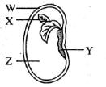
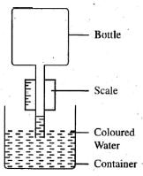
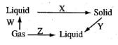
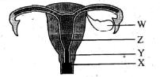
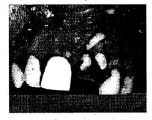
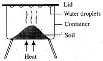

1. Which one of the following blood vessel is correctly matched with the type of blood it carries?
2. Which one of the following manure is most expensive to prepare?
3. Which one of the following method of water pollution kills fish by suffocating them?
4. Which one of the following is an insectivore plant?
5. In the food chain, what would happen if all the snakes are killed?
Plants —► Insects —► frogs —► snakes
6. Which one of the following is an advantage of frictional force?
7. Which one of the following is not a use of light energy?
8. The diagram below shows a bean seed. Which part grows into shoot?

9. Which one of the materials below is a good conductor of heat?
10. The force that opposes motion is measured in?
11. Which one of the following is the last step in separating a mixture of salt, sand and iron filling?
12. Which one of the following is the best method of controlling malaria?
13. DPT vaccine is administered into how many doses?
14. The diagram below shows a weather instrument.

15. Soil that has poor water holding capacity also _____
16. Which one of the following is an inner planet?
17. Which one of the following materials can be placed at point X to make the bulb light in the set up below?
18. Which one of the following is not a reason for taking HIV/A1DS test? To
19. Absorption of water and mineral salts takes place in the?
20. When breathing out _____
21. The illustration below shows changes of state in matter.

22. Which one of the following blood cells is CORRECTLY matched with its function?
23. Which one of the following pairs of liquids can be separated by decanting?
24. Class 7 pupils put half glass salt in water. What did they observe?

25. Ovulation takes place from part marked?
26. Part marked X can be compared to which part of a flower?
27. Menstruation takes place part marked?
28. The main reason why farmers use mulching is to?
29. Which one of the following type of soil erosion is most difficult to notice?
30. Which one of the following material is translucent?
31. The splitting of white light into seven colours of spectrum is called?
32. Which one of the following planets has the longest orbit?
33. In a food chain, green plants are referred to as?
34. Which one of the following CANNOT lead to spread of H1V/AIDS?
35. The above picture shows a defect in teeth and mouth.

36. Which one of the following pairs consist of internal parasites only?
37. Mohair is an animal product from?
38. Which one of the following is a perennial crop?
39. Which one of the following is the BEST method of controlling monkeys from destroying maize plantation?
40. Class 4 pupils heated garden soil as shown below. Which component of the soil were they investigating?

41. Which one of the following weeds has succulent stems that creep on the ground and its flowers are blue in colour?
42. Girls during menstruation should be encouraged to eat food rich in?
43. Which one of the following pests bores holes in grains?
44. Which one of the following animal feeds is a concentrate?
45. Which one of the following is NOT a use of carbon dioxide?
46. Which one of the following diseases can be spread through drinking un-boiled milk from cow?
47. Which one of the following is NOT a method of grazing?
48. Which state of matter has definite volume and definite shape?
49. Which one of the following is a health effect of drug abuse?
50. The diagram below represents the composition of gases in the atmosphere. Which one of the following is NOT the use of gas labeled C?